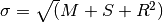

Step 5: Create a Median Image¶
A median image gets generated from the stack of undistorted single drizzle images.
Create a median image from the singly drizzled images.
| Authors: | Warren Hack |
|---|---|
| License: | http://www.stsci.edu/resources/software_hardware/pyraf/LICENSE |
-
drizzlepac.createMedian.createMedian(imgObjList, configObj, procSteps=None)[source]¶ Top-level interface to createMedian step called from top-level MultiDrizzle.
This function parses the input parameters then calls the
_median()function to median-combine the input images into a single image.
-
drizzlepac.createMedian.getHelpAsString(docstring=False, show_ver=True)[source]¶ return useful help from a file in the script directory called __taskname__.help
-
drizzlepac.createMedian.help(file=None)[source]¶ Print out syntax help for running astrodrizzle
Parameters: file : str (Default = None)
If given, write out help to the filename specified by this parameter Any previously existing file with this name will be deleted before writing out the help.
-
drizzlepac.createMedian.median(input=None, configObj=None, editpars=False, **inputDict)[source]¶ The singly drizzled science images are combined to create a single median image. This median combination gets performed section-by-section from the input single drizzled images. Each section corresponds to a contiguous set of lines from each image taking up no more than 1Mb in memory, such that combining 10 input images would only require 10Mb for these sections. The goal of this step is to establish an estimate for what the fully cleaned image should look like in order to enable better bad pixel detection, in addition to improving the alignment of the image stack. Creating a median image from the aligned and undistorted input images allows for a statistical rejection of bad pixels.
The final median image serves as the only output from this step.
For more information on the science applications of the
createMediantask, see the DrizzlePac Handbook.Parameters: input : str or list of str (Default = None)
A python list of drizzled image filenames, or just a single filename.
configObj : configObject (Default = None)
An instance of
configObjectwhich overrides default parameter settings.editpars : bool (Default = False)
A parameter that allows user to edit input parameters by hand in the GUI. True to use the GUI to edit parameters.
inputDict : dict, optional
An optional list of parameters specified by the user, which can also be used to override the defaults.
Other Parameters: median : bool (Default = No)
This parameter specifies whether or not to create a median image. This median image will be used as the comparison ‘truth’ image :in the cosmic ray rejection step.
median_newmasks : bool (Default = Yes)
This parameter specifies whether or not new mask files will be created when the median image is created. These masks are generated from weight files previously produced by the “driz_separate” step, and contain all bad pixel information used to exclude pixels when calculating the median. Generally this step should be set to “Yes”, unless for some reason, it is desirable to include bad pixel information when generating the median.
combine_maskpt : float (Default = 0.7)
Percentage of weight image values, below which the are flagged.
combine_type : str {‘average’, ‘median’, ‘sum’, ‘minmed’} (Default = ‘minmed’)
This parameter defines the method that will be used to create the median image. The ‘average’, ‘median’, and ‘sum’ options set the calculation type when running ‘numcombine’, a numpy method for median-combining arrays to create the median image. The “minmed” option will produce an image that is generally the same as the median, except in cases where the median is significantly higher than the minimum good pixel value. In this case, “minmed” will choose the minimum value. The sigma thresholds for this decision are provided by the “combine_nsigma” parameter. However, as the “combine_nsigma” parameter does not adjust for the larger probability of a single “nsigma” event with a greater number of images, “minmed” will bias the comparison image low for a large number of images. The value of sigma is computed as , where M is the median image data (in electrons), S is the value of the subtracted sky (in electrons), and R is the value of the readout noise (in electrons). “minmed” is highly recommended for three images, and is good for four to six images, but should be avoided for ten or more images.
A value of ‘median’ is the recommended method for a large number of images, and works equally well as minmed down to approximately four images. However, the user should set the “combine_nhigh” parameter to a value of 1 when using “median” with four images, and consider raising this parameter’s value for larger numbers of images. As a median averages the two inner values when the number of values being considered is even, the user may want to keep the total number of images minus “combine_nhigh” odd when using “median”.
combine_nsigma : float (Default = ‘4 3’)
This parameter defines the sigmas used for accepting minimum values, rather than median values, when using the ‘minmed’ combination method. If two values are specified the first value will be used in the initial choice between median and minimum, while the second value will be used in the “growing” step to reject additional pixels around those identified in the first step. If only one value is specified, then it is used in both steps.
combine_nlow : int (Default = 0)
This parameter sets the number of low value pixels to reject automatically during image combination.
combine_nhigh : int (Default = 0)
This parameter sets the number of high value pixels to reject automatically during image combination.
combine_lthresh : float (Default = INDEF)
Sets the lower threshold for clipping input pixel values during image combination. This value gets passed directly to ‘imcombine’ for use in creating the median image. If the parameter is set to “None”, no thresholds will be imposed.
combine_hthresh : float (Default = INDEF)
This parameter sets the upper threshold for clipping input pixel values during image combination. The value for this parameter is passed directly to ‘imcombine’ for use in creating the median image. If the parameter is set to “None”, no thresholds will be imposed.
combine_grow : int (Default = 1)
Width, in pixels, beyond the limit set by the rejection algorithm being used, for additional pixels to be rejected in an image. This parameter is used to set the ‘grow’ parameter in ‘imcombine’ for use in creating the median image.
combine_bufsize : float (Default = None)
Size of buffer, in Mb, to use when reading in each section of each input image. The default buffer size is 1Mb. The larger the buffer size, the fewer times the code needs to open each input image and the more memory will be required to create the median image. A larger buffer can be helpful when using compression, since slower copies need to be made of each set of rows from each input image instead of using memory-mapping.
Examples
For
createMedian, the user interface function ismedian:>>> from drizzlepac import createMedian >>> createMedian.median('*flt.fits')